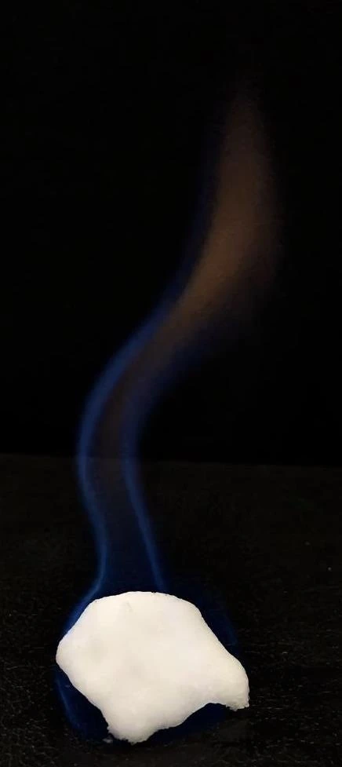

Seawater, saline cryopeg fluids, or engineered solutions can introduce dissolved ions into frozen sediments, including hydrate-bearing samples.
EXPERIMENTAL GEOCRYOLOGY · 2019–PRESENT
What happens when salt meets frozen ground?
My research on methane gas hydrates began with a question about frozen sediment stability: how can salts and pore fluids trigger ice melting and hydrate dissociation even while the ground remains below 0°C?
Working with Evgeny Chuvilin and colleagues at Moscow State University and Skoltech, I developed and investigated laboratory experiments that connect salinity, temperature, pressure, ground composition, and gas release.

THE PHYSICAL MECHANISM
Ice, salt,
methane.
Gas hydrates are ice-like crystalline structures that trap gas molecules in a water framework. Their stability in permafrost depends on pressure, temperature, and local geochemical conditions.
Experiments show that salt accumulation can alter unfrozen-water content, promote pore-ice melting, and destabilize metastable methane hydrates at subzero temperatures.
In some experiments, the hydrate-dissociation front advanced ahead of the pore-ice thawing front. The resulting methane release was quantified under laboratory conditions.

My experimental contribution
My doctoral research centered on experimental studies of salt migration through frozen hydrate-bearing sediments, quantitative analysis of salt transport, and the preparation of research manuscripts. The 2019 published author-contribution statement documents my participation in experimental methodology, calculation methods, experiments, analysis, and manuscript writing.
See published author contributions ↗Collaboration and mentorship
This research was conducted in teams led by Evgeny Chuvilin, working with Dinara Davletshina, Boris Bukhanov, Ekaterina Krivokhat, and other colleagues at MSU and Skoltech. The papers also include contributions from collaborators working on Arctic shelf processes and gas emissions. Authorship and contributor roles are preserved in each linked article.
PhD defense record · Skoltech ↗WHAT THE EXPERIMENTS TEST
Controlling
the conditions.
Controlled laboratory measurements help separate the effects of environmental factors that often change together in field settings.
Temperature
Salt transport, cooling during dissociation, and the timing of phase transitions.
Gas pressure
Hydrate stability and the sensitivity of ion movement to the pressure state.
Solution chemistry
The influence of ion type and concentration, including NaCl and MgCl₂.
Sediment texture
The effect of sand, silt, and clay components on migration and pore processes.
Why it matters for the Arctic
The experiments identify mechanisms that may influence methane-hydrate stability in saline permafrost and around drilling operations. Related research documents gas emission occurrences in the Russian Arctic. Laboratory dissociation is not, by itself, evidence of a particular field methane emission rate.
Published synthesis of gas emissions ↗From laboratory work to field science
Today, I apply the same experimental perspective to near-surface permafrost in Alaska: snow, water, sediment properties, and phase changes affect how frozen ground responds. My longer-term goal is to pair direct measurements with laboratory-derived physical relationships that improve predictions.
Explore my current permafrost research ↗SELECTED GAS-HYDRATE WORK
A decade of
collaborative publications.
Selected peer-reviewed publications, including work published in Russian-language journals. These are team papers; author order and contributions are given in the originals.
Experimental modeling of the interaction of drilling fluids with frozen hydrate-containing rocks
Chuvilin, Krivokhat, Bukhanov, Sokolova, Ekimova & Mukhametdinova · Earth's Cryosphere 30(2), 41–53
Drilling-fluid temperature and composition, including contact with cryopeg brines.
Destabilization of intrapermafrost gas hydrates by salt migration from cryopegs: experimental results
Chuvilin, Krivokhat, Bukhanov, Ekimova & Mukhametdinova · Georesursy 27(3)
Naturally occurring saline brines and hydrate dissociation.
Salt transfer in frozen methane hydrate-containing sediments during their interaction with salt solutions
Chuvilin, Ekimova, Davletshina, Bukhanov & Krivokhat · Earth's Cryosphere 27(6), 40–50
Russian: Солеперенос в мерзлых породах, содержащих гидрат метана.
Migration of Salt Ions in Frozen Hydrate-Saturated Sand: Effect of Silt and Clay Particles
Chuvilin, Ekimova et al. · Energy & Fuels 37(7), 5331–5340
How fine-grained constituents affect salt transport.
Pressure Influence on Salt Migration in Frozen Hydrate-Saturated Sediments: Experimental Modeling
Chuvilin, Ekimova et al. · Energy & Fuels 36(18), 10519–10528
Pressure dependence of ion transport and hydrate stability.
Migration of Salt Ions in Frozen Hydrate-Saturated Sediments: Temperature and Chemistry Constraints
Chuvilin, Ekimova et al. · Geosciences 12(7), 276
Temperature, salinity, and different solution chemistries.
Temperature Variation during Salt Migration in Frozen Hydrate-Bearing Sediments: Experimental Modeling
Chuvilin, Ekimova et al. · Geosciences 12(7), 261
Temperature signatures associated with salt entry and phase transitions.
Evidence of Gas Emissions from Permafrost in the Russian Arctic
Chuvilin, Ekimova, Davletshina, Sokolova & Bukhanov · Geosciences 10(10), 383
Synthesis of reported natural and drilling-related gas emissions.
Role of Warming in Destabilization of Intrapermafrost Gas Hydrates in the Arctic Shelf: Experimental Modeling
Chuvilin, Davletshina, Ekimova et al. · Geosciences 9(10), 407
Hydrate response to temperature changes within frozen sediments.
Role of Salt Migration in Destabilization of Intra Permafrost Hydrates in the Arctic Shelf: Experimental Modeling
Chuvilin, Ekimova, Bukhanov, Grebenkin, Shakhova & Semiletov · Geosciences 9(4), 188
Salt-induced hydrate dissociation ahead of pore-ice melting.
Bibliographic information verified against original journal and publisher records. “Energy & Fuels” volume 36(18) is used for the 2022 pressure study. This bibliography is selected, not necessarily exhaustive; other gas-hydrate work and proceedings are available through my full CV and scholarly profile.
From frozen pore space to Arctic landscapes.
Interested in coupled phase transitions, saline permafrost, experimental methods, or interpreting frozen-ground processes across scales?